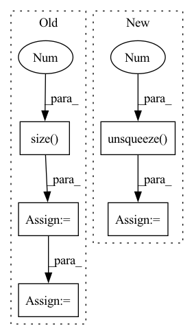

Pattern ID :26942
Before Change
output_audio, _ = self.RNNs[1](X_audio)
output_visual, _ = self.RNNs[2](X_visual)
batch_size = output_text.size(0 )
// (batch, num_directions * hidden_size)
output_text = output_text[:, -1, :]
output_audio = output_audio[:, -1, :]
output_visual = output_visual[:, -1, :]
// (num_classes, 300)
text_emo_vecs = self.textEmoEmbs(torch.LongTensor(list(range(self.num_classes))))
visual_emo_vecs = self.affineVisual(text_emo_vecs)
audio_emo_vecs = self.affineAudio(text_emo_vecs)
text_emo_vecs = text_emo_vecs.unsqueeze(0).repeat(batch_size, 1, 1)
visual_emo_vecs = visual_emo_vecs.unsqueeze(0).repeat(batch_size, 1, 1)
audio_emo_vecs = audio_emo_vecs.unsqueeze(0).repeat(batch_size, 1, 1)
text_attn_feature = self.attention(output_text, text_emo_vecs)
visual_attn_feature = self.attention(output_visual, visual_emo_vecs)
audio_attn_feature = self.attention(output_audio, audio_emo_vecs)
// TODO: try residual connection
logits = self.out(torch.cat((text_attn_feature, visual_attn_feature, audio_attn_feature), dim=1))
return logits
After Change
output_text, _ = self.RNNs[0](X_text)
output_text = output_text[:, -1, :]
text_emo_vecs_origin = self.textEmoEmbs(torch.LongTensor(list(range(self.num_classes))).to(self.device))
text_emo_vecs = text_emo_vecs_origin.unsqueeze(0 ) .repeat(batch_size, 1, 1)
text_attn_weights = self.attention(output_text, text_emo_vecs)
logits = text_attn_weights if logits is None else logits + text_attn_weights
In pattern: SUPERPATTERN
Frequency: 3
Non-data size: 5
Instances Fragment ID: 80330697
Project Name: wenliangdai/modality-transferable-mer
Commit Name: b0e565d11d6b3bf9f65fb1dcbdc8c641a2bc8054
Time: 2020-06-10
Author: wenliang.dai.1995@gmail.com
File Name: src/models/temp.py
M Class Name: EmotionEmbAttnModel
N Class Name: EmotionEmbAttnModel
M Method Name: forward(4)
N Method Name: forward(4)
M Parent Class: nn.Module
N Parent Class: nn.Module
M File Name: src/models/temp.py
N File Name: src/models/temp.py
M Start Line: 53
M End Line: 79
N Start Line: 70
N End Line: 96
Before Change
//in-batch negative sample
//!! TODO: use mask matrix. It"s slow now.
batch_size = y.size(0 )
scores = torch.ones(batch_size, 1 + self.n_neg, device=y.device) //positive sample in the first position.
y_expand = torch.cat((y, y))
for i in range(batch_size):
scores[i, :] = torch.cat((y_expand[i].view(-1), y_expand[i + 1:i + 1 + self.n_neg]))After Change
// pred[i, j] means predicted score that user_i give to item_j
pred = torch.cosine_similarity(user_embedding.unsqueeze(1 ) , item_embedding, dim=2) // (batch_size, batch_size)
// get sample weight of items in this batch
sample_weight = self.embedding(x, self.sample_weight_feature, squeeze_dim=True).squeeze(1) // (batch_size)
scores = pred - torch.log(sample_weight) //Sampling Bias Corrected, using broadcast
if user_embedding.shape[0] * (self.n_neg + 1) != self.index0.shape[0]: // last batch
batch_size = user_embedding.shape[0]
index0 = self.index0[:batch_size * (self.n_neg + 1)]
index1 = self.index1[:batch_size * (self.n_neg + 1)]
index0[np.where(index0 >= batch_size)] -= batch_size
index1[np.where(index1 >= batch_size)] -= batch_size
scores = scores[index0, index1]
else:
scores = scores[self.index0, self.index1]
Fragment ID: 80330712
Project Name: datawhalechina/torch-rechub
Commit Name: d0461152ddffad7a6bf7c7532b7b540094623e95
Time: 2022-06-07
Author: icewwl@163.com
File Name: torch_rechub/models/matching/youtube_sbc.py
M Class Name: YoutubeSBC
N Class Name: YoutubeSBC
M Method Name: forward(2)
N Method Name: forward(2)
M Parent Class: torch.nn.Module
N Parent Class: torch.nn.Module
M File Name: torch_rechub/models/matching/youtube_sbc.py
N File Name: torch_rechub/models/matching/youtube_sbc.py
M Start Line: 55
M End Line: 80
N Start Line: 60
N End Line: 87
Before Change
rir_waveform = rir_waveform.unsqueeze(0)
// Compute the average amplitude of the clean
orig_amplitude = compute_amplitude(
waveforms, waveforms.size(1 ) , rescale_amp
)
// Compute index of the direct signal, so we can preserve alignment
value_max, direct_index = rir_waveform.abs().max(axis=1)
// Making sure the max is always positive (if not, flip)
mask = (rir_waveform[:, direct_index] < 0).squeeze(-1)
rir_waveform[mask] = -rir_waveform[mask]
// Use FFT to compute convolution, because of long reverberation filter
waveforms = convolve1d(
waveform=waveforms,
kernel=rir_waveform.unsqueeze(-1),
use_fft=True,
rotation_index=direct_index,
)
// Rescale to the peak amplitude of the clean waveform
waveforms = rescale(
waveforms, waveforms.size(1), orig_amplitude, rescale_amp
)
After Change
if len(waveforms.shape) == 1:
waveforms = waveforms.unsqueeze(0).unsqueeze(-1)
elif len(waveforms.shape) == 2:
waveforms = waveforms.unsqueeze(-1 )
if len(rir_waveform.shape) == 1: // convolve1d expects a 3d tensor !
rir_waveform = rir_waveform.unsqueeze(0).unsqueeze(-1)
elif len(rir_waveform.shape) == 2: Fragment ID: 80330721
Project Name: speechbrain/speechbrain
Commit Name: 0a5f7b91576ba484f872e9152ab1a484bd8f71b5
Time: 2020-07-15
Author: cornellsamuele@gmail.com
File Name: speechbrain/processing/signal_processing.py
M Class Name: AnonimousClass
N Class Name: AnonimousClass
M Method Name: reverberate(3)
N Method Name: reverberate(3)
M Parent Class:
N Parent Class:
M File Name: speechbrain/processing/signal_processing.py
N File Name: speechbrain/processing/signal_processing.py
M Start Line: 308
M End Line: 336
N Start Line: 310
N End Line: 336